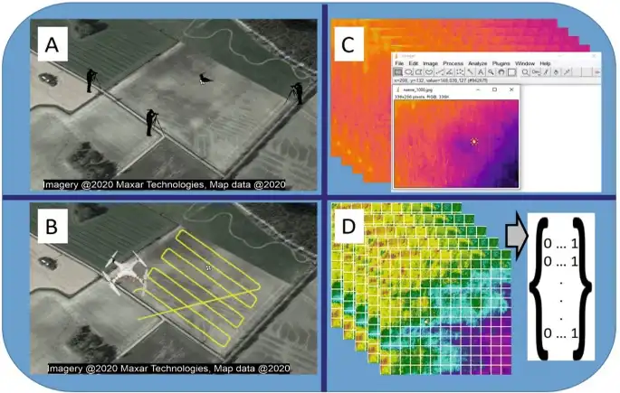
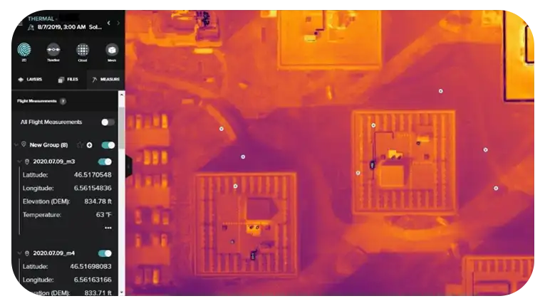
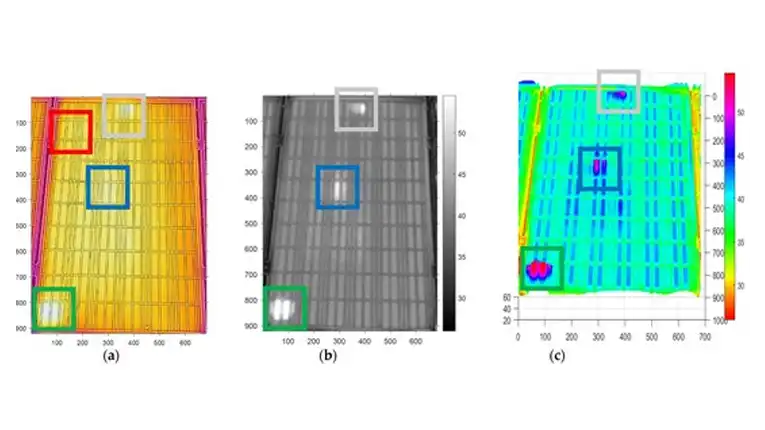
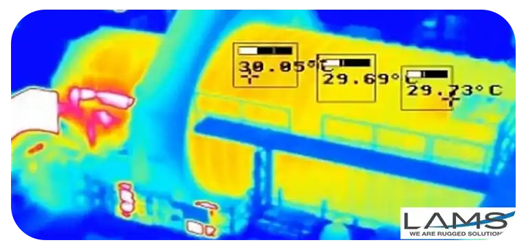
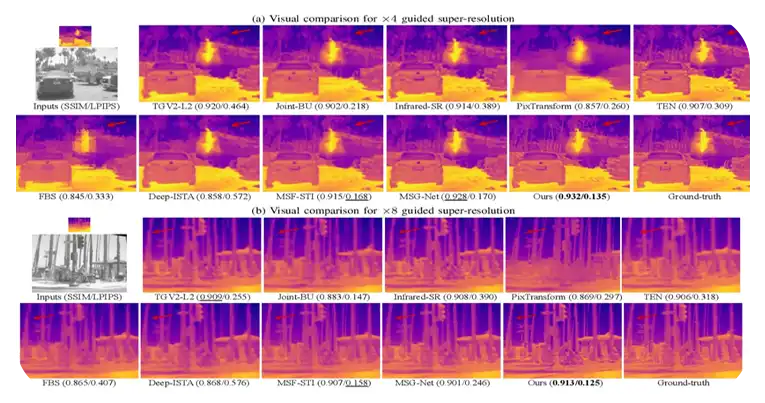
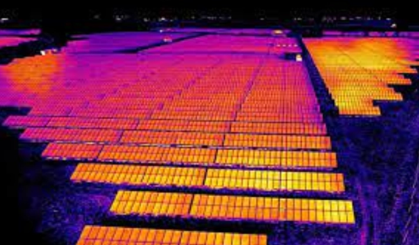
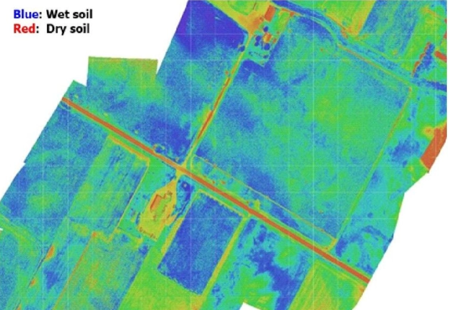
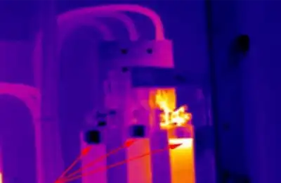
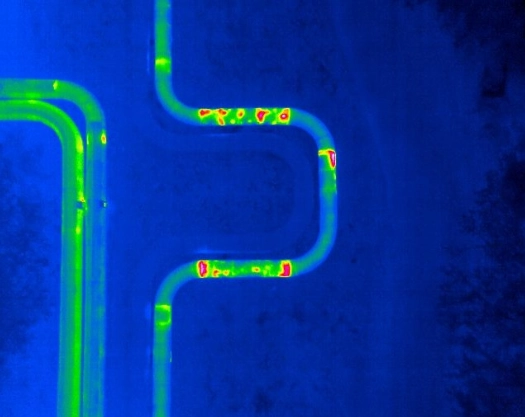
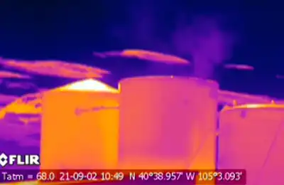

Drone Thermal Surveys

We begin by adopting a collaborative approach, engaging closely with our clients to thoroughly understand their specific requirements and objectives for the thermal survey. This initial phase includes conducting detailed assessments of the site to identify crucial areas of interest, evaluate potential risks, and establish necessary safety protocols. Through this comprehensive site evaluation, we ensure that all pertinent factors are carefully considered.
After the site assessment we prepare a flight plan for the job, allowing for weather, the best flight height and the coverage needed.
At DATA PKT Infra & Geomatics, our commitment is centered on delivering precise and actionable insights utilizing advanced thermal imaging technology. We prioritize customization of our approach to align with the distinct requirements of each client, ensuring that our thermal surveys yield valuable information that supports informed decision-making and operational efficiency across diverse industries. By tailoring our services to meet specific client needs, we aim to provide comprehensive solutions that enhance productivity and facilitate strategic decision-making based on reliable thermal data.
Our drones carry thermal imaging cameras that record infrared emission from surfaces. Pilots fly the planned missions for full coverage at the required image resolution, capturing temperature variation across the site.
We process the imagery into high-resolution thermal maps that show temperature differences across the site, so decisions are based on measured data.
Through our specialized drone operations, we ensure thorough and reliable thermal surveys that support various applications across industries. By harnessing the capabilities of our advanced equipment and expertise, we aim to provide actionable insights that enhance operational efficiency and facilitate strategic planning for our clients.


After the flight, our team processes the raw thermal data into thermal maps and datasets and analyses them to find anomalies and hotspots, such as heat loss, equipment faults or structural defects.
Our thermal maps show temperature variation across the surveyed area clearly, for decisions on maintenance, efficiency and risk.
Each report is tailored to the asset and the decision it needs to support.
Equipped with advanced sensors and visual inspection capabilities, DATA PKT drones conduct thorough examinations of roads, bridges, highways, and expressways to facilitate monitoring of pavement and road surface conditions. These drones efficiently navigate through difficult terrain and deliver detailed digital surface models (DSM) and digital terrain models (DTM) with high resolution. This capability is particularly valuable for protecting environmentally sensitive areas during surveys.
For roads and other infrastructure, our drones combine visual and thermal sensors to assess pavement and surface condition and to produce DSMs and DTMs for maintenance planning.

At DATA PKT, our dedication to customer satisfaction goes beyond the initial survey, as we provide continuous support and monitoring services to our clients. We offer regular thermal surveys to monitor changes over time, detect new challenges, and evaluate the impact of implemented solutions. Our team remains accessible to address any inquiries or issues our clients may have and collaborate on future initiatives to maximize the advantages of drone thermal imaging technology.
We are committed to ensuring ongoing customer satisfaction by delivering comprehensive support and monitoring services. This includes conducting regular thermal surveys to track temporal variations, identify emerging issues, and assess the effectiveness of remedies deployed. Our team is readily available to respond to client queries and collaborate on upcoming projects to harness the full potential of drone thermal imaging technology.
At DATA PKT, we are committed to exceeding customer expectations by providing continuous support and monitoring services. We conduct regular thermal surveys to monitor changes over time, identify emerging issues, and evaluate the effectiveness of implemented solutions.

Thermal survey used for
We use radiometric thermal sensors that capture thermal images and video with relative and actual temperature values over large areas, with centimetre-level detail. We tailor the survey to infrastructure, environmental or industrial needs and support you through interpretation of the results.
We provide following services:
With radiometric thermal imaging, a drone survey finds faults at cell level within a panel, panel level within a sub-array and array level within a block, faster and more safely than manual inspection. See our guide to solar thermography reports.
The ability to detect and diagnose issues with such precision enables maintenance teams to promptly enhance energy output and prevent further damage. By swiftly identifying performance faults, teams can take proactive measures to mitigate potential losses and ensure optimal operational efficiency of solar installations.
To facilitate the identification of performing panels or sub-arrays, we offer raw thermal radiometric imagery for processing. Alternatively, our expert team can handle the thermal data analysis, producing detailed hotspot reports integrated with GPS data. This comprehensive approach ensures that our clients receive actionable insights tailored to their specific needs, supporting informed decision-making and proactive maintenance strategies.


Using drones equipped with thermal sensors, our service provides swift and precise analysis of soil moisture. By capturing thermal images from aerial perspectives, we identify and map fluctuations in soil temperature, allowing for accurate evaluation of moisture levels. This data assists farmers in optimizing irrigation techniques, improving crop vitality, and maximizing harvest yields. Our advanced drone technology streamlines operations, reducing expenses and time investments while delivering crucial agricultural management insights.
Thermal imaging maps variation in soil temperature across a field, which shows how moisture is distributed and where irrigation is needed.
This is faster and cheaper than traditional soil assessment and supports decisions that affect yield.
Farmers get timely moisture maps that support efficient water use and consistent yields.
To reduce downtime caused by equipment malfunctions, modern maintenance practices emphasize the implementation of condition-based techniques for monitoring electrical assets. These methods aim to predict the deterioration of various components or vulnerable areas prone to failure.
Thermal survey is one of the most effective ways to find hot spots. Most electrical failures come from faulty components or loose connections, and infrared imaging shows them before they become failures or fire hazards.
Thermal Surveys using infrared cameras is a contemporary approach in condition-based maintenance, crucial for early detection of electrical and mechanical issues. It allows for the detection of hot spots, heat build-up on loose connections, and concealed faults that might otherwise go unnoticed. By pinpointing potential problems early, this technology helps prevent costly repairs, minimize downtime, and enhance overall operational reliability.
Regular thermal surveys give asset managers early warning, so equipment can be repaired before it fails.

Detect leaks
Using thermal sensor-equipped drones, we swiftly identify leaks in diverse infrastructures, including pipelines, roofs, and industrial equipment. These drones capture infrared radiation to detect temperature irregularities that signal leaks or moisture infiltration. Rapid detection plays a crucial role in averting expensive damages, environmental risks, and operational disruptions. Our service facilitates efficient identification of leaks, enabling prompt repairs and maintenance actions that enhance safety and operational reliability.
Thermal drones find leaks and moisture ingress by detecting the temperature anomalies they cause across pipelines, roofs and other infrastructure.
Leaks are located quickly, so repairs can start sooner, with less downtime and less environmental impact.
The result is safer operation and fewer costly incidents.
Utilizing drones equipped with thermal sensors, our service efficiently identifies water leaks and structural damage. These advanced drones capture infrared radiation to detect alterations in ground temperature that signal potential leaks.
Variations in ground temperature reveal water leaks and damage to buried or hidden structures, so they can be found and fixed early.
Early detection means smaller repairs, less downtime and less water lost.
Our reports show where each problem is and how serious it looks, so maintenance can be prioritised.


Using drones equipped with thermal sensors, we offer precise aerial inspections of oil and gas infrastructure. Our service swiftly and accurately identifies leaks, damages, and irregularities, enhancing safety measures and minimizing environmental risks.
At DATA PKT Infra & Geomatics, we specialize in conducting aerial inspections of oil and gas infrastructure using advanced drone technology integrated with thermal sensors. This enables us to promptly and precisely detect leaks, damages, and anomalies that could pose safety hazards or environmental concerns. Our proactive approach includes delivering high-resolution thermal imaging data, facilitating early intervention and preventive maintenance strategies to mitigate potential threats.
Thermal inspections for oil and gas are planned around the sector's regulatory requirements and reduce downtime during maintenance.
Operators get clear evidence of asset condition to plan maintenance and protect safety and the environment.
Our Features

5x Faster Delivery
Our dedicated team of GIS experts works tirelessly to swiftly process and analyze drone survey data, ensuring prompt delivery, often ahead of schedule.
99% Accurate Measurement
We achieve up to 99% accuracy in our results, employing advanced machine learning techniques for precise yield estimation, volumetric measurements, and more.

Team of Experts
Our GIS engineers, drone pilots and software engineers work in shifts so survey data is processed without delay.
Advanced Equipment
We fly DJI drones and our own custom-built drones with high-resolution survey sensors.
Frequently asked questions
What is a drone thermal survey?
A drone thermal survey uses an infrared camera on a drone to measure surface temperature across a site. Faults that change temperature, such as failing solar cells, loose electrical joints or water ingress, become visible in the thermal image.
When should a solar thermal inspection be flown?
In clear, steady sunlight with the plant operating, usually around midday. The widely used standard for aerial thermography of PV plants, IEC TS 62446-3, sets a minimum irradiance of 600 W/m² on the modules.
What defects can thermal drones find in a solar plant?
Hot spots and cell cracks, bypass diode faults, open or disconnected strings, junction box overheating, potential induced degradation patterns, and soiling or shading.
What is the difference between radiometric and non-radiometric thermal cameras?
A radiometric camera records a temperature value for every pixel, so each defect can be measured and compared. A non-radiometric camera only shows relative hot and cold areas. Inspection reports need radiometric data.